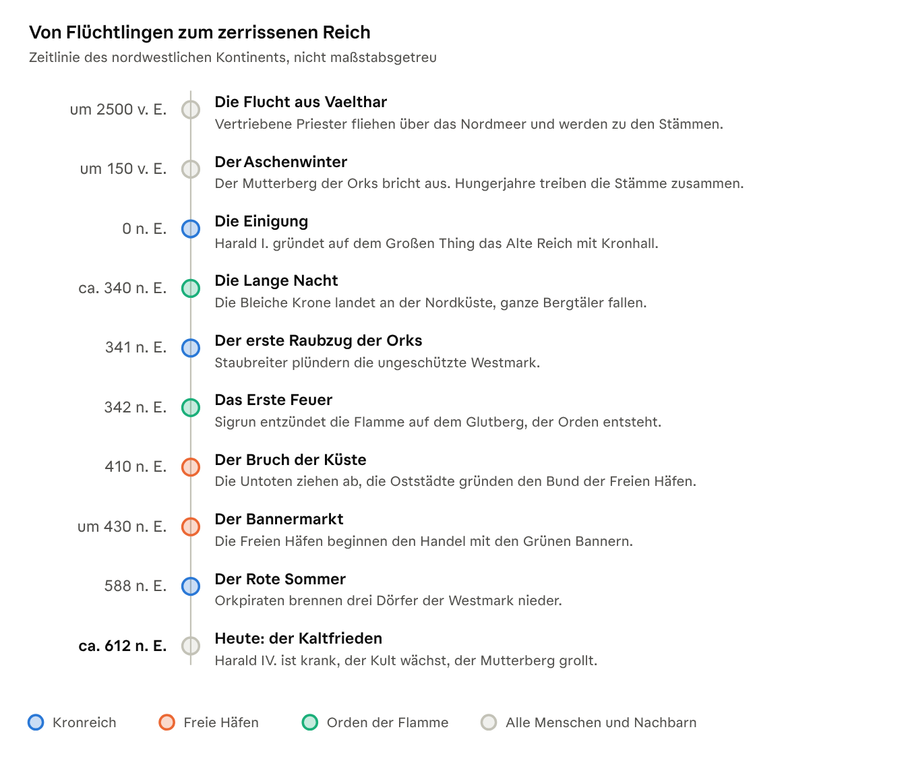
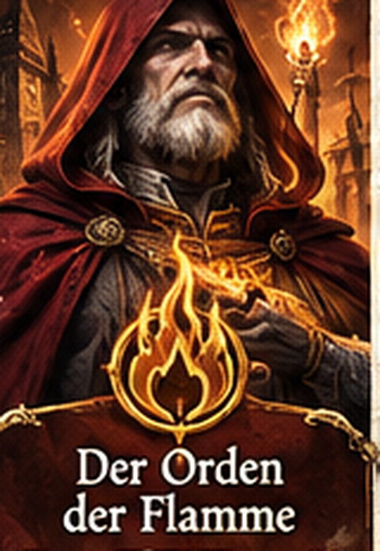
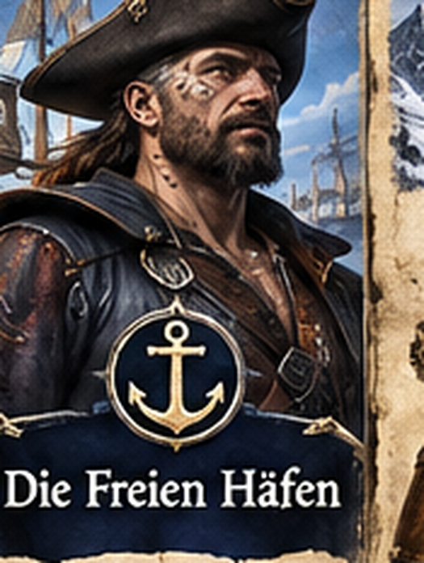
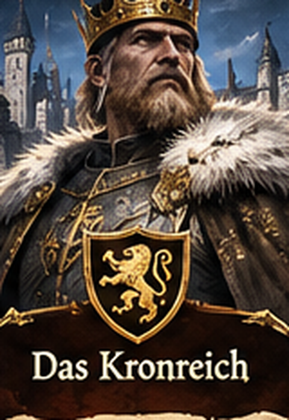

Nov 16, 2026 · @Henry
Die Menschen – Völker und Fraktionen
Überblick
Die Menschen sind das jüngste und zahlreichste Volk der Welt. Sie bewohnen den nordwestlichen Kontinent, der vom Nordmeer, der Westsee und dem Inneren Meer umschlossen ist. Ein zentraler Gebirgszug teilt das Land in drei Regionen, und jede Region hat eine eigene Fraktion hervorgebracht.
Gemeinsame Eigenschaften aller Menschen
Anpassungsfähig: Menschen leben im Schnee des Nordens, in den Wäldern der Ostküste und auf den Steppen des Südwestens. Kein anderes Volk besiedelt so viele Biome.
Kurzlebig und ehrgeizig: Ein Mensch wird selten älter als 70 Jahre. Was er erreichen will, muss er schnell erreichen. Deshalb gründen Menschen Reiche, Gilden und Orden, die ihren Namen überdauern sollen.
Vielseitig ohne Spitzenbegabung: Elfen sind die besseren Magier, Zwerge die besseren Schmiede, Orks die stärkeren Krieger. Menschen sind in allem brauchbar und lernen schnell von anderen.
Fruchtbar: Menschen vermehren sich schneller als jedes andere Volk. Verluste im Krieg gleichen sie in einer Generation aus.
Uneinig: Die drei Fraktionen teilen Sprache und Ursprung, aber nicht ihre Werte. Ihre Streitigkeiten sind die größte Schwäche des Volkes.
Aussehen: Sehr unterschiedlich je nach Region. Im Norden hellhäutig, groß und kräftig, an der Ostküste gemischt durch Handel mit allen Völkern, im Südwesten sonnengebräunt und dunkelhaarig.
Kultur: Alle Menschen teilen eine nordisch geprägte Kultur. Sie leben in Langhäusern und Holzhallen, erzählen die Taten ihrer Ahnen als Sagas, ritzen Runensteine für ihre Toten und treffen wichtige Entscheidungen auf dem Thing, einer Versammlung der Freien. Skalden sind hoch angesehen, Met fließt bei jedem Fest. Jede Fraktion hat diese Wurzeln auf ihre eigene Art weiterentwickelt.
Sprache: Die gemeinsame Sprache heißt Reichszunge, eine raue Sprache mit nordischem Klang. Der Orden pflegt eine alte Runensprache für seine Gebete, die Häfen sprechen ein Händlerkauderwelsch mit elfischen und zwergischen Lehnwörtern.
Magie: Unter den Menschen wirkt nur der Orden der Flamme Magie, und zwar als heilige Gabe seines Glaubens. Freie Häfen und Kronreich beherrschen keine Magie. Sie gleichen das mit Handwerk, Handel, Seefahrt und Kriegskunst aus.
Geschichte
Die drei Fraktionen entstanden aus einem einzigen Reich, das am Krieg gegen die Untoten zerbrach. Die Zeitrechnung zählt die Jahre nach der Einigung (n. E.).

Zeitlinie der Menschen · 10 Ereignisse
Zeit der Stämme (vor 0 n. E.): Verstreute Menschenstämme leben im Schatten der älteren Völker. Ihre Ahnen waren Priester und Flüchtlinge, die um 2500 v. E. aus dem Königreich Vaelthar im Norden über das Meer flohen, kurz bevor es zum Reich der Geister wurde. Zwerge handeln mit ihnen, Elfen ignorieren sie. Um 150 v. E. bricht weit im Süden der Mutterberg der Orks aus. Drei Sommer lang verdunkelt Asche den Himmel, und die Hungerjahre treiben die Stämme zusammen. Die Erinnerung daran ebnet den Weg zur Einigung.
Die Einigung (0 n. E.): König Harald I. vereint auf dem Großen Thing die Stämme des fruchtbaren Südwestens und gründet das Alte Reich mit der Königshalle Kronhall.
Die Lange Nacht (ca. 340 n. E.): Der Hof der Bleichen Krone landet an der Nordküste und sucht Körper für die Geister Vaelthars. Das königliche Heer kommt zu spät, ganze Bergtäler fallen. Die Elfen verweigern jede Hilfe, die Zwerge schicken kein Heer, verkaufen aber Waffen.
Das Erste Feuer (342 n. E.): Die Seherin Sigrun entzündet auf dem Gipfel des Glutbergs eine Flamme, die Untote verbrennt. Um sie sammeln sich die Überlebenden des Nordens. Daraus wird der Orden der Flamme.
Der Bruch der Küste (410 n. E.): Die Untoten ziehen plötzlich ab, weil auf ihrem Kontinent der Krieg der Drei ausbricht. Die Menschen halten das für ihren Sieg. Die Oststädte zahlen den Krieg mit Steuern, bekommen aber keinen Schutz für ihre Flotten. Sie verweigern die Abgaben und schließen den Bund der Freien Häfen.
Der Kaltfrieden (410 n. E. bis heute, ca. 612 n. E.): Das Kronreich erkennt die Unabhängigkeit der Häfen nie offiziell an. Der Orden schwört dem König formal Treue, handelt aber eigenständig. Drei Grenzkriege und unzählige Intrigen prägen die letzten zwei Jahrhunderte. Um 430 n. E. finden die Häfen neue Partner: Die Königsbank der Zwerge leiht ihnen Geld, und sie handeln mit den Grünen Bannern der Orks und mit den Elfen. Im Verborgenen wächst in dieser Zeit der Kult der Bleichen Ewigkeit. An der Westmark plündern seit 341 n. E. Orkpiraten der Staubreiter, und im Roten Sommer 588 n. E. brennen sie drei Dörfer nieder.
Orden der Flamme

Der Orden ist ein religiöser Ritterstaat im verschneiten Norden und die einzige Fraktion der Menschen, die Magie beherrscht. Er widmet sein Leben dem Kampf gegen die Untoten jenseits des Nordmeers.
Lebensraum: Gebirge, Hochgipfel und Schneefelder im Norden des Kontinents, mit schmalen Nadelwaldtälern. Wenig Ackerland, daher abhängig von Getreide aus dem Kronreich.
Wappen und Farben: Eine goldene Flamme auf rotem Grund über einem schwarzen Berg. Farben: Scharlachrot, Gold, Schwarz.
Kultur und Werte
Leben in Askese: Ritter besitzen nur Schwert, Rüstung und Runenbuch.
Jeder Mensch im Ordensland dient: als Ritter, Priester, Bergbauer oder Feuerwächter.
Die alten Sagas erzählen von Sigrun und den ersten Flammenträgern. Wer im Kampf gegen Untote fällt, bekommt einen Runenstein am Glutberg.
Wahlspruch: „Solange die Flamme brennt, ruht der Tod.“
Totenbrauch: Alle Verstorbenen werden auf Scheiterhaufen verbrannt, wie einst die Ahnen auf brennenden Booten, damit niemand als Untoter zurückkehrt.
Religion und Magie: Der Orden verehrt die Ewige Flamme, eine göttliche Kraft der Reinigung. Ihre Magie fließt durch Glaube und Runen:
Flammenrunen: In Waffen und Rüstungen geritzte Runen, die im Kampf aufglühen und Untote verbrennen. Das Schneiden haben die ersten Runenmeister des Ordens bei der zwergischen Runenschmiede gelernt, doch ihre Kraft kommt allein aus dem Glauben.
Feuergebete: Priester rufen Flammensäulen, Feuerwände und Lichtblitze herbei.
Seherblick: Die Seherinnen des Ordens lesen im Feuer Vorzeichen und spüren Untote und Kultisten auf.
Heilende Glut: Wunden werden mit heiligem Feuer ausgebrannt und schließen sich.
Die Magie ist an den Glauben gebunden. Wer zweifelt oder die Gelübde bricht, verliert seine Kraft. Jede Magie außerhalb des Ordens gilt als Ketzerei, Totenbeschwörung wird mit dem Scheiterhaufen bestraft.
Herrschaft und Anführer
| Person | Rolle | Kurzbeschreibung |
|---|---|---|
| Hochmeisterin Ragna Glutherz | Oberhäuptin des Ordens | Ehemalige Feldherrin, kompromisslos und charismatisch, Nachfahrin der Gründerin Sigrun |
| Erzpriester Thorvald | Hüter der Ewigen Flamme | Alt, fanatisch, misstraut dem Kronreich und wünscht einen Kreuzzug über das Meer |
| Ser Bjarne vom Eispass | Marschall der Nordwacht | Pragmatischer Soldat, sucht heimlich Kontakt zu den Freien Häfen |
| Seherin Freydis | Oberste Seherin | Jagt den Kult der Bleichen Ewigkeit und vermutet Verräter im eigenen Orden |
Wichtige Orte
Glutberg: Heiliger Gipfel und Hauptsitz. In seiner Spitze brennt die Ewige Flamme seit über 270 Jahren.
Die Nordwacht: Kette von Leuchtturmfestungen an der Nordküste, die nach untoten Schiffen Ausschau halten.
Eispass: Einziger befahrbarer Pass nach Süden ins Kronreich, streng bewacht.
Aschenkloster: Ausbildungsstätte der Paladine und Runenmeister in einem Hochtal.
Militär
Flammenritter: Schwer gepanzerte Paladine mit Flammenrunen, Elite der Menschen.
Feuerpriester: Kampfmagier mit Flächenzaubern, besonders stark gegen Untote.
Seherinnen: Unterstützer, die Hinterhalte und getarnte Feinde aufdecken und Verbündete heilen.
Bergschützen: Armbrustschützen aus den Gebirgsdörfern.
Bußgänger: Fanatische Freiwillige ohne Rüstung, billig und furchtlos.
Stärken: Einzige Magie der Menschen, Moral, Disziplin, Wirkung gegen Untote, uneinnehmbare Bergfestungen.
Schwächen: Kleine Bevölkerung, wenig Nahrung, teure Einheiten, dogmatisch, Magie versagt bei sinkendem Glauben.
Freie Häfen

Die Freien Häfen sind ein Bund reicher Handelsstädte an der Ostküste, der ohne König auskommt und mit Gold statt mit Schwertern regiert. Magie wirken sie nicht, dafür sind sie die besten Seefahrer, Händler und Erfinder der Menschen.
Lebensraum: Die buchtenreiche Ostküste am Inneren Meer mit Laubwäldern und Grasland im Hinterland, dazu die kleinen Inseln im Inneren Meer als Außenposten. Das Gebirge im Westen schützt sie vor dem Kronreich.
Wappen und Farben: Ein goldener Anker in einem tiefblauen Rund mit silbernem Rand. Farben: Meerblau, Gold, Silber.
Kultur und Werte
Die Häfen stammen von Seefahrern und Kaufleuten ab, die einst mit Langschiffen und Knorren die Küsten befuhren. Ihre Städte wuchsen aus Handelsplätzen.
Freiheit heißt hier vor allem Freiheit des Handels. Jeder darf aufsteigen, wenn er genug verdient.
Vielvölkische Städte: In den Hafenvierteln leben Zwerge, Elfen und sogar geduldete Orks.
Ein Handschlag vor Zeugen ist heilig. Wer einen Vertrag bricht, wird vom Thing geächtet und verliert sein Gildenrecht.
Wahlspruch: „Jedes Meer ist ein Weg.“
Religion und Glaube: Keine Staatsreligion. Seeleute opfern der Wellenmutter, Händler dem Goldvater. Magie gilt als schlechtes Omen auf See, und kein Kapitän nimmt einen Zauberer an Bord. Wer Magie braucht, mietet sie bei Fremden, was teuer und selten ist.
Besondere Fähigkeiten statt Magie
Navigation: Sternkarten, Sonnensteine und zwergische Kompasse machen sie zu den einzigen Menschen, die das offene Meer sicher überqueren.
Erfindungsgeist: Gemeinsam mit den Zwergen bauen sie Schwarzpulverwaffen, Kräne und schnelle Schiffe.
Handel und Diplomatie: Sie haben Verträge mit fast jedem Volk und können Waren, Söldner und Wissen beschaffen.
Spionage: Das dichteste Netz aus Agenten und Informanten der Welt.
Herrschaft und Anführer: Das Hafenthing aus den sieben mächtigsten Gilden wählt alle zehn Jahre einen Thingsprecher.
| Person | Rolle | Kurzbeschreibung |
|---|---|---|
| Thingsprecherin Solveig Valsdottir | Sprecherin des Hafenthings | Klügste Diplomatin der Menschen, hat mit jedem Volk einen Vertrag |
| Admiral Knut Salzhand | Befehlshaber der Bundesflotte | Ehemaliger Pirat, loyal zur Flotte, nicht zum Thing |
| „Die Stille Feder“ | Meisterin der Spionage | Niemand kennt ihr Gesicht, ihre Agenten sitzen an jedem Hof |
| Meister Orrin Kupferbart | Zwergischer Gildenherr | Vertritt die Bankiers, bindet die Häfen eng an die Zwerge |
Wichtige Orte
Perlvik: Größte Hafenstadt und Sitz des Hafenthings, mit Leuchtturm, Börse und der großen Sternwarte.
Salzwacht: Kriegshafen und Werft der Bundesflotte.
Die Zollinseln: Die kleinen Inseln im Inneren Meer. Wer das Meer durchquert, zahlt hier Zoll.
Grenzmarkt am Pass: Handelsplatz im Gebirge, an dem sich Kronreich und Häfen trotz Feindschaft treffen.
Militär
Bundesflotte: Langschiffe für den Enterkampf und hochbordige Kriegsknorren mit Geschützen, die stärkste Flotte aller Menschen.
Seesoldaten: Leicht gerüstete Enterkämpfer mit Axt und Handbüchse.
Büchsenschützen: Fernkämpfer mit zwergischen Schwarzpulverwaffen.
Soldkompanien: Angeheuerte Truppen aller Völker, teuer, aber sofort verfügbar.
Schattenklingen: Spione und Attentäter im Dienst der Stillen Feder.
Stärken: Reichtum, Seeherrschaft, Schwarzpulver, Spionage, Diplomatie, Zugang zu fremden Waren und Waffen.
Schwächen: Keine Magie, kleines eigenes Heer, Abhängigkeit von Söldnern, Gilden zerstritten, eher dem Gold als den anderen Menschen treu.
Kronreich

Das Kronreich ist das größte und bevölkerungsreichste Menschenreich, ein Feudalkönigreich, das sich als rechtmäßiger Erbe des Alten Reiches sieht. Es wirkt keine Magie und verlässt sich auf Masse, Stahl und Ordnung.
Lebensraum: Der gesamte Westen und Süden des Kontinents mit weiten Ackerflächen, Grasland und Laubwäldern. Im äußersten Südwesten gehen die Felder in trockene Steppe über. Die Kornkammer der Menschen.
Wappen und Farben: Ein aufsteigender goldener Löwe auf schwarzem Schild mit goldenem Rand, das Zeichen von Harald I. und dem Alten Reich. Farben: Gold, Schwarz, Waldgrün.
Kultur und Werte
Strenge Standesordnung: König, Jarle, Ritter, freie Bauern, Unfreie.
Ehre, Herkunft und Tradition zählen mehr als Reichtum. Händler aus den Häfen gelten als Emporkommlinge.
Jedes Jahr ruft der König die Jarle zum Reichsthing nach Kronhall. Dort werden Gesetze verkündet, Streit geschlichtet und Turniere gekämpft.
Erntefeste und Gelage in den großen Methallen prägen das Jahr, Skalden besingen die Taten der Könige.
Wahlspruch: „Eine Krone, ein Volk.“
Religion und Glaube: Das Kronreich verehrt das Dreigestirn: den Allvater (Recht und Herrschaft), die Erdmutter (Ernte und Leben) und die Flamme (Schutz). Der Orden sieht die Flamme als einzig wahre Gottheit, was ein ständiger Glaubensstreit ist. Magie ist nach Königsrecht verboten, weil sie nach dem Glauben des Kronreichs allein den Göttern zusteht. Wer zaubert, wird geächtet. Nur die Priester des Ordens sind geduldet, weil ihre Kraft von der Flamme kommt.
Besondere Fähigkeiten statt Magie
Landwirtschaft: Die fruchtbarsten Felder der Menschen ernähren große Heere und die anderen Fraktionen gleich mit.
Reiterei: Die Pferdezüchter der Südsteppe liefern die besten Schlachtrosse des Kontinents.
Burgen- und Belagerungsbau: Steinburgen, Ballisten und Katapulte aus königlichen Werkstätten.
Heilkunde: Kräuterkundige und Feldscher pflegen Verwundete mit Wissen statt Zauberei.
Ordnung und Nachschub: Ein Netz aus Straßen, Kornspeichern und Vogteien hält das Heer lange im Feld.
Herrschaft und Anführer
| Person | Rolle | Kurzbeschreibung |
|---|---|---|
| König Harald IV. | Herrscher des Kronreichs | Alt und krank, will vor seinem Tod die Freien Häfen zurückgewinnen |
| Kronprinzessin Astrid | Thronerbin | Klug und reformwillig, sucht Frieden mit den Häfen, bei den Jarlen unbeliebt |
| Jarl Ragnvald von Hagenfels | Mächtigster Vasall | Herr des Südens, plant heimlich, selbst die Krone zu nehmen |
| Kanzler Ulf Grau | Oberster Verwalter | Steuert die Verwaltung, hält alle Fäden, und niemand weiß, wem er wirklich dient |
Wichtige Orte
Kronhall: Hauptstadt im Herzen des Ackerlands, mit der Weißen Königshalle und dem größten Tempel des Dreigestirns.
Hagenfels: Burgstadt im Süden, Sitz des ehrgeizigen Jarls.
Westmark: Fischerdörfer an der Westsee, von Orkpiraten aus dem Süden bedroht.
Die Südsteppe: Dünn besiedelte Weidegebiete, Heimat der Pferdezüchter und der besten Reiterei.
Die Grenzburgen: Festungen am Gebirgsrand, die gleichzeitig gegen die Häfen und den Orden gerichtet sind.
Militär
Königliche Ritter: Schwere Kavallerie, die stärkste Schlagkraft der Menschen auf offenem Feld.
Huskarle: Die Leibgarde des Königs und der Jarle, Elitekämpfer mit Dänenaxt und Rundschild.
Landwehr: Massen an Speerträgern und Langbogenschützen aus der Bauernschaft.
Steppenreiter: Leichte Kavallerie aus dem Südwesten für Aufklärung und Überfälle.
Belagerungsmeister: Ingenieure mit Katapulten und Ballisten.
Stärken: Größte Bevölkerung, reiche Nahrung, schwere Kavallerie, Burgenbau, verzeiht Fehler.
Schwächen: Keine Magie, langsame Verwaltung, Intrigen der Jarle, schwache Flotte, starre Traditionen.
Der Kult der Bleichen Ewigkeit (nicht spielbar)
Der Kult ist eine geheime vierte Gruppe, die die Untoten verehrt, weil sie selbst nach Unsterblichkeit strebt. Er ist nicht spielbar, sondern handelt selbständig im Verborgenen aller drei Fraktionen.
Glaube: Die Kultisten nennen die Untoten die Vollendeten. Der Tod ist für sie kein Ende, sondern ein Tor. Wer der Bleichen Krone treu dient, so glauben sie, wird nach dem Sterben als ewiger Draugr zurückkehren und Verstand, Erinnerung und Macht behalten. Ihr Zeichen ist ein Runenkreis ohne Anfang und Ende. Die Wahrheit kennt kein Kultist: Im Draugr erwacht nicht er selbst, sondern ein Geist aus Vaelthar, und seine eigene Seele wird an Aldrics Krone gebunden.
Magie: Totenmagie ist die einzige Magie, die es neben dem Orden unter Menschen gibt. Sie ist geliehen, nicht erlernt: Aldric, der Lichkönig der Bleichen Krone, leiht sie seinen Dienern im Tausch gegen Treue und Opfer. Je mächtiger ein Kultist wird, desto kälter und lebloser wird sein Körper.
Aufbau
Der Bleiche Skalde: Unbekannter Anführer, der angeblich schon seit über hundert Jahren lebt.
Die Grabwächter: Ein innerer Kreis von wenigen Eingeweihten, je einer pro Fraktion.
Die Zellen: Kleine Gruppen von fünf bis zehn Mitgliedern, die einander kaum kennen.
Der Kult in den drei Fraktionen
| Fraktion | Wer sich dem Kult anschließt | Was der Kult dort tut |
|---|---|---|
| Orden der Flamme | Gefallene Priester, die ihren Glauben verloren haben, und Ritter, die zu viel Tod gesehen haben | Löscht heimlich Wachfeuer der Nordwacht, verrät Patrouillen, will die Ewige Flamme ersticken |
| Freie Häfen | Reiche Kaufleute, die ihr Vermögen nicht dem Tod überlassen wollen | Schmuggelt Reliquien und Knochen von und nach dem Kontinent der Untoten, finanziert den Kult |
| Kronreich | Alte Jarle und Adlige, die Macht und Leben verlängern wollen | Spinnt Intrigen am Hof, bietet dem kranken König Harald IV. das ewige Leben an |
Rolle im Spiel
Der Kult erscheint als Ereignis, Gegner oder Bedrohung in jeder Fraktion, nie als eigene Spielerfraktion.
Verderbnis: Jede Provinz hat einen versteckten Kultwert. Steigt er zu hoch, kommt es zu Aufständen, Verrat oder dem Erwachen von Untoten mitten im eigenen Reich.
Gegenmaßnahmen: Der Orden spürt Kultisten mit Seherinnen auf, die Häfen mit Spionen, das Kronreich mit Inquisitionsgerichten und Garnisonen.
Beziehungen
Die Menschen sind nach außen ein Volk, aber jede Fraktion verfolgt eine eigene Außenpolitik. Gemeinsam handeln sie nur, wenn die Untoten angreifen.
Untereinander
Kronreich und Freie Häfen: Offene Feindschaft. Das Kronreich nennt die Häfen „abtrünnige Provinzen“, die Häfen halten das Kronreich mit Krediten und Getreidekäufen in Abhängigkeit. Beide brauchen einander wirtschaftlich.
Kronreich und Orden: Formale Bündnispartner. Der Orden schwört dem König Treue und bekommt dafür Getreide. Das Kronreich duldet die Magie des Ordens als einzige erlaubte. Doch der Orden hält den Glauben des Kronreichs für verwässert und gehorcht nur, wenn es ihm passt.
Orden und Freie Häfen: Gegenseitige Verachtung. Der Orden hält die Häfen für gottlose Krämer, die mit jedem handeln, sogar mit dem Feind. Die Häfen halten den Orden für Fanatiker. Trotzdem brauchen beide einander: Nur die Flotte der Häfen könnte einen Angriff über das Nordmeer abwehren, und nur die Magie des Ordens hält die Untoten wirklich auf.
Alle gegen den Kult: Der Kult der Bleichen Ewigkeit ist der einzige Feind, den alle drei Fraktionen gleich fürchten. Trotzdem beschuldigen sie sich gegenseitig, ihn zu dulden.
Zu den anderen Völkern
| Volk | Orden der Flamme | Freie Häfen | Kronreich |
|---|---|---|---|
| Untote | Todfeind, Daseinszweck des Ordens | Kein offizieller Kontakt möglich, einzelne Gilden schmuggeln heimlich mit den Erinnernden | Feind, aber weit weg und unterschätzt |
| Elfen | Misstrauen gegenüber ihrer Magie | Wichtige Handelspartner für Holz, Kräuter und Zauberwaren | Alte Kränkung: Elfen verweigerten in der Langen Nacht Hilfe |
| Orks | Gleichgültig, weit entfernt | Handeln mit den Grünen Bannern, kämpfen gegen Piraten | Erbfeind durch Raubzüge an der Westküste |
| Zwerge | Respekt, kaufen Waffen und Rüstungen | Engste Verbündete, zwergische Banken finanzieren den Bund | Neutral, Zwerge bauten einst die Mauern von Kronhall |
So kann jede Fraktion der Menschen ein anderes Volk als Partner haben: der Orden die Zwerge, die Häfen Zwerge und Elfen, das Kronreich vorerst niemanden. Das macht das Kronreich isoliert und gefährlich.
Spielwerte
Die Werte sind ein Vorschlag für ein Strategie- oder Brettspiel auf einer Skala von 0 (keine) bis 5 (herausragend). Jede Fraktion hat zusammen 18 Punkte. Nur der Orden hat Magie, die anderen gleichen das mit ihren Stärken aus.
| Wert | Kronreich | Freie Häfen | Orden der Flamme |
|---|---|---|---|
| Schwierigkeit | Leicht | Mittel | Schwer |
| Nahkampf | 5 | 2 | 4 |
| Fernkampf | 3 | 4 | 2 |
| Magie | 0 | 0 | 5 |
| Seemacht | 1 | 5 | 1 |
| Wirtschaft | 3 | 5 | 1 |
| Bevölkerung | 5 | 1 | 1 |
| Moral | 1 | 1 | 4 |
| Summe | 18 | 18 | 18 |
Schwierigkeitsgrade
Kronreich, leicht: Viele Truppen, viel Nahrung, starke Einheiten mit einfacher Rolle. Fehler kosten wenig, weil Verluste schnell ersetzt werden. Ideal für Einsteiger.
Freie Häfen, mittel: Stark nur, wenn man Gold, Flotte und Spione klug einsetzt. Das eigene Heer ist klein, man muss Söldner kaufen und Bündnisse schließen.
Orden der Flamme, schwer: Mächtige, aber teure Einheiten, wenig Nahrung und kaum Nachschub. Magie verlangt Glauben, der durch Niederlagen sinkt. Jeder Verlust schmerzt, Fehler sind kaum zu korrigieren.
Fraktionsboni
Kronreich, „Die Kornkammer“: Einheiten kosten 20 % weniger Nahrung. Schwere Kavallerie erhält beim ersten Angriff doppelten Schaden. Neue Ressource Korn: Sie ernährt Heer und Volk, steigt mit Ernten und Frieden und sinkt durch Ascheregen, Raubzüge und Krieg. Fällt das Korn auf null, bricht ein Hungeraufstand aus.
Freie Häfen, „Gold öffnet Tore“: Können Söldner jedes Volkes anheuern und Einheiten mit Gold statt Rohstoffen kaufen. Spione sind 25 % günstiger, Schiffe bewegen sich 1 Feld weiter. Neue Ressource Gold: Es kauft Söldner, Schiffe und Verträge, steigt durch Handel und Zölle und sinkt durch Piraten, Blockaden und geplatzte Kredite. Fällt das Gold auf null, sind die Häfen bankrott.
Orden der Flamme, „Heiliges Feuer“: +50 % Schaden gegen Untote und Kultisten. Einheiten fliehen nie, solange ein Feuerpriester in der Nähe ist. Neue Ressource Glaube: Sie treibt die Zauber an, steigt mit Siegen und sinkt mit Niederlagen.
Gemeinsamer Volksbonus Menschen, „Vielseitigkeit“: Menschen können eine Einheit oder Technologie eines Volkes übernehmen, mit dem sie ein Bündnis haben. Mit Orks gibt es kein Bündnis, nur Verträge und gemeinsame Schlachten gegen einen gemeinsamen Feind.
Städte, Dörfer und Häfen
Von Henry festgelegt (16.11.2026): Jede Fraktion hat eine Hauptstadt und bis zu zehn Städte. Zu jedem Gebiet gehören eigene Dörfer. Hauptstadt, Städte und Dörfer produzieren die Ressourcen der Fraktion. Nach der Vereinigung fließen ihre Erträge in einen gemeinsamen Vorrat des ganzen Volkes.
Hauptstadt: Sie produziert am meisten, ist Sitz der Anführer und bildet die stärksten Einheiten und Helden aus. Fällt sie, hat die Fraktion verloren.
Städte: Sie produzieren Gold, Truppen und die eigene Ressource der Fraktion. Eine eroberte Stadt produziert für den Eroberer.
Dörfer: Sie liefern Nahrung und Rohstoffe wie Holz, Stein und Erz an die Städte ihres Gebiets. Wer die Dörfer eines Gebiets verliert, schwächt dessen Städte.
Häfen: Nur eine Stadt am Meer kann einen Hafen haben, auch die Hauptstadt. Häfen bringen Handel und Gold. Nur über einen Hafen können Armeen, Helden und Heldengruppen über das Meer gebracht werden. Wer keinen eigenen Hafen hat, braucht einen Verbündeten oder Vertragspartner mit Hafen und Schiffen.
| Fraktion | Hauptstadt | Häfen | Was die Siedlungen liefern |
|---|---|---|---|
| Kronreich | Kronhall | Kleine Handelshäfen an der Westmark, aber keine Kriegsflotte. Armeen über das Meer brauchen die Schiffe der Freien Häfen | Die vielen Dörfer liefern Korn, die Städte Truppen und Pferde |
| Freie Häfen | Perlvik | Fast jede Stadt hat einen Hafen, die größte Flotte der Menschen | Hafenstädte liefern Gold aus Handel und Zöllen, Dörfer wenig Nahrung |
| Orden der Flamme | Glutberg | Ein kleiner Hafen an der Nordwacht, kaum Schiffe. Über das Nordmeer bringen ihn die Freien Häfen | Städte mit Tempeln liefern Glauben, Dörfer wenig Nahrung |
Damit sind die Freien Häfen für jeden Feldzug über das Meer unverzichtbar, gegen die Untoten im Norden ebenso wie gegen die Orks im Westen.
Die Städte der Fraktionen
Jede Fraktion hat eine Hauptstadt und zehn Städte. „Hafen“ heißt, dass die Stadt am Meer liegt und einen Hafen hat.
Kronreich: Hauptstadt Kronhall. Städte: Hagenfels, Haraldstad, Kornwik, Rosshag, Eikmark, Steinwacht, Ulfsborg, Heidvang, Westvik (Hafen), Sandvik (Hafen).
Freie Häfen: Hauptstadt Perlvik (Hafen). Städte: Salzwacht (Hafen, Kriegshafen und Werft), Zollholm (Hafen, auf den Zollinseln), Grenzmarkt (am Pass), Möwenstad (Hafen), Bernsvik (Hafen), Ankerfjord (Hafen), Skerheim (Hafen), Tranvik (Hafen), Silberholm (Hafen), Nebelvik (Hafen).
Orden der Flamme: Hauptstadt Glutberg. Städte: Aschenkloster, Eiswacht (am Eispass), Nordwacht (Hafen), Glutvik (Hafen), Sigrunsheim, Brandstein, Flammenhof, Thorvaldsklipp, Wachtfeuer, Lichtheim.
Die Dörfer der Fraktionen
Zu jeder Stadt gehören Dörfer, zur Hauptstadt drei, zu jeder anderen Stadt zwei. In Klammern steht, was das Dorf liefert.
Kronreich
| Stadt | Dörfer und Ertrag |
|---|---|
| Kronhall (Hauptstadt) | Weizenhof (Korn), Königsau (Korn), Mühlbach (Mehl) |
| Hagenfels | Burgwiese (Pferde), Eisenbach (Erz) |
| Haraldstad | Ackerholm (Korn), Rinderby (Vieh) |
| Kornwik | Garbenfeld (Korn), Hopfendal (Bier) |
| Rosshag | Hengstweide (Pferde), Sattelby (Leder) |
| Eikmark | Eichenhain (Holz), Köhlerby (Kohle) |
| Steinwacht | Felsby (Stein), Grenzhof (Korn) |
| Ulfsborg | Wolfstal (Felle), Birkenby (Holz) |
| Heidvang | Heidby (Honig), Schafhag (Wolle) |
| Westvik | Netzby (Fisch), Tangstrand (Salz) |
| Sandvik | Muschelby (Fisch), Dünenhof (Schafe) |
Freie Häfen
| Stadt | Dörfer und Ertrag |
|---|---|
| Perlvik (Hauptstadt) | Perlstrand (Perlen), Fischerholm (Fisch), Gartenby (Gemüse) |
| Salzwacht | Werftby (Holz), Teerhag (Teer) |
| Zollholm | Leuchtholm (Fisch), Kliffby (Eier) |
| Grenzmarkt | Passhof (Maultiere), Saumby (Handelswaren) |
| Möwenstad | Möwenstrand (Fisch), Salzgarten (Salz) |
| Bernsvik | Bernsteinstrand (Bernstein), Tangby (Tang) |
| Ankerfjord | Seilerby (Tauwerk), Fjordhof (Fisch) |
| Skerheim | Robbenschär (Tran), Klippenhof (Schafe) |
| Tranvik | Walby (Tran), Räucherby (Fisch) |
| Silberholm | Silbergrube (Silber), Inselhof (Korn) |
| Nebelvik | Nebelstrand (Fisch), Schmugglerbucht (Schmuggelware) |
Orden der Flamme
| Stadt | Dörfer und Ertrag |
|---|---|
| Glutberg (Hauptstadt) | Kerzenhof (Wachs), Pilgerrast (Glaube), Bergweide (Ziegen) |
| Aschenkloster | Klostergarten (Kräuter), Hochtalhof (Gerste) |
| Eiswacht | Passhütte (Zoll), Firnby (Felle) |
| Nordwacht | Leuchtfeuer (Tran), Robbenstrand (Fisch) |
| Glutvik | Eismeerby (Fisch), Walstrand (Tran) |
| Sigrunsheim | Sigrunsquell (Glaube), Gerstenhof (Gerste) |
| Brandstein | Schwefelgrube (Schwefel), Feuerhof (Kohle) |
| Flammenhof | Opferhain (Glaube), Ziegenalm (Ziegen) |
| Thorvaldsklipp | Gebetsfels (Glaube), Kliffhof (Schafe) |
| Wachtfeuer | Holzfällerby (Holz), Wachthof (Korn) |
| Lichtheim | Kapellby (Glaube), Bienental (Wachs) |
Spielziele und Hauptquests
Das übergeordnete Ziel aller Menschen ist, die Bedrohung durch Untote und Orks auf null zu senken. Gewonnen hat, wer das schafft und dabei die Menschen unter seinem Banner vereint.
Bedrohungsleisten
Zwei Bedrohungsleisten von 0 bis 100 laufen für alle Fraktionen gemeinsam, dazu als dritte Leiste die Glut des Mutterbergs (siehe unten). Erreicht eine der beiden Bedrohungsleisten 100, verlieren alle Menschenspieler. Die Glutleiste kostet bei 100 Nahrung und Bevölkerung, aber nicht das Spiel. Spielt jemand die Untoten, zeigt die Untoten-Leiste dessen Fortschritt.
| Untote | Orks | |
|---|---|---|
| Senken durch Kampf | Ja, einziger Weg | Ja |
| Senken durch Verhandlung | Nein, Untote verhandeln nie | Ja: Friedensverträge, Tribut, Handel, Grenzziehung |
| Steigt durch | Ausbreitung des Kults, erloschene Wachfeuer, verlorene Schlachten, Raubzüge der Erinnernden und der Fäulnisbrut an den Küsten | Raubzüge an der Westküste, gebrochene Verträge, Hunger in der Steppe |
| Auf null gesenkt durch | Zerstörung der drei Untoten-Hauptfestungen (Palast der Tausend Stimmen, Eryndor, Tempel der Fleischaltäre) und Auslöschung des Kults | Jeder der drei Ork-Clans ist besiegt oder hat einen Frieden unterschrieben. Werden alle Clans vernichtet, egal von wem, fällt die Ork-Bedrohung sofort auf null |
Die Ork-Clans reagieren unterschiedlich: Die Grünen Banner sind am offensten für Handel, die Staubreiter lassen sich mit Tribut kaufen, der Aschenclan respektiert nur Stärke und verhandelt erst nach einer verlorenen Schlacht.
Die Glut des Mutterbergs: Eine dritte Leiste von 0 bis 100 zeigt, wie nah der zweite Aschenwinter auf dem Kontinent der Orks ist. Sie steigt vor allem, weil der Tiefe Stollen der Zwerge den Vulkan weckt. Bei 50 fällt Ascheregen, die Ernten des Kronreichs schrumpfen, und Hunger hebt die Ork-Bedrohung. Bei 100 verlieren alle Menschenfraktionen für mehrere Runden die Hälfte ihrer Nahrung und Bevölkerung. Die Menschen können die Leiste senken, indem sie hungernden Ork-Clans Korn und Vieh liefern, die Ahnenstätten der Orks schonen oder den Stollen angreifen. Das Letzte kostet das Ansehen bei den Zwergen.
Das Erzfieber der Zwerge: Die Zwerge haben eine eigene Leiste von 0 bis 100, das Erzfieber. Es zeigt ihre Gier nach Erz und steht heute bei 45. Ab 50 steigt die Glutleiste jede Runde um 1 zusätzlich, ab 75 um 2. Die Menschen können es bremsen: Wer Kredite der zwergischen Königsbank zurückzahlt oder einen fairen Handelsvertrag schließt, senkt es um 5. Wer Kredite platzen lässt, hebt es um 5. Das trifft vor allem die Freien Häfen, die tief bei den Zwergen verschuldet sind.
Das Herz des Berges: Heben die Zwerge das Herz des Berges aus dem Mutterberg, erlischt der Vulkan. Die Glutleiste fällt sofort auf null, aber die Ahnen der Orks sind für immer verloren. Damit kann die Glut auch dann noch gestoppt werden, wenn es keine Orks mehr gibt, die das Ahnenfeuer entzünden.
Unter einem Banner vereinen
Jede Fraktion kann die anderen beiden auf zwei Wegen für sich gewinnen:
Eroberung: Die Hauptstadt der anderen Fraktion einnehmen (Kronhall, Perlvik oder Glutberg). Die Fraktion wird zum unterworfenen Vasallen. Schnell, aber jede Eroberung senkt die Moral aller Menschen und lässt den Kult wachsen.
Diplomatie: Erst ein Handelsvertrag, dann ein Bündnis, dann ein Treueschwur auf dem großen Thing. Erfordert genug Ansehen und erfüllte Bitten der anderen Fraktion. Langsam, aber ohne Verluste.
Eine vereinte Menschheit erhält den Bonus „Das Alte Reich“: Alle Einheiten aller Menschenfraktionen sind verfügbar.
Zwerge und Elfen
Mit beiden Völkern sind Handel und Bündnisse möglich, nicht aber eine Vereinigung unter dem Banner. Zwerge sind die besten Schmiede und geschickte Händler. Sie liefern Waffen, Rüstungen und Schwarzpulver und helfen am meisten gegen die Orks. Elfen liefern Holz, Heilkräuter und Späher und sind wichtige Verbündete gegen die Untoten. Ein Bündnis senkt die passende Bedrohungsleiste schneller, kostet aber Gold oder Zugeständnisse.
Hauptquest Kronreich (leicht): „Eine Krone, ein Volk“
Der Thron wankt: Die Nachfolge von Harald IV. klären und Jarl Ragnvalds Aufstand niederschlagen oder ihn auf seine Seite ziehen.
Feuer an der Westmark: Die Orkpiraten der Staubreiter vertreiben oder mit ihnen einen Frieden aushandeln.
Die abtrünnigen Häfen: Die Freien Häfen erobern oder auf dem Reichsthing zur Rückkehr bewegen.
Der Schwur am Glutberg: Den Orden vom einfachen Lehnseid zur echten Gefolgschaft führen.
Das Alte Reich ersteht neu: Mit vereintem Heer beide Bedrohungen auf null senken.
Hauptquest Freie Häfen (mittel): „Jedes Meer ist ein Weg“
Die Zollinseln: Alle Handelsrouten im Inneren Meer sichern und Piraten vertreiben.
Gold und Eisen: Ein Bündnis mit den Zwergen schließen und Schwarzpulver in Massen herstellen.
Der Handel mit den Grünen Bannern: Den ersten Frieden mit einem Ork-Clan aushandeln und die Orkbedrohung damit spürbar senken.
Die Kronschuld: Das Kronreich durch Kredite abhängig machen, bis es dem Hafenthing einen Bund anbietet oder die Stadt Kronhall fällt.
Die Flotte gen Norden: Den Orden über das Nordmeer bringen und die Untoten an ihrer eigenen Küste schlagen.
Hauptquest Orden der Flamme (schwer): „Solange die Flamme brennt“
Die flackernde Flamme: Herausfinden, warum die Ewige Flamme schwächer wird, und sie neu entfachen.
Verräter im Feuer: Den Kult im eigenen Orden aufspüren und den Bleichen Skalden enttarnen.
Der Kreuzzug ruft: Kronreich und Häfen überzeugen oder unterwerfen, damit sie Getreide und Schiffe stellen.
Die Elfen am Weltenbaum: Ein Bündnis mit den Elfen gegen die Untoten schmieden, trotz des alten Misstrauens gegen ihre Magie.
Über das Nordmeer: Den Hof der Bleichen Krone, die Erinnernden und die Fäulnisbrut vernichten und die Untotenbedrohung auf null senken.
Jede Hauptquest kann Ork-Bedrohung und Untoten-Bedrohung senken, aber nur eine Fraktion, die alle Menschen vereint, hat die Kraft für beide.
Siegbedingung: Untoten-Bedrohung 0, Ork-Bedrohung 0 und alle Menschenfraktionen unter einem Banner, egal ob durch Eroberung oder Diplomatie.
Niederlage: Eine Bedrohungsleiste erreicht 100, die eigene Hauptstadt fällt an Untote oder Orks, oder die eigene Ressource sinkt auf null (Kronreich: Korn, Hungeraufstand; Freie Häfen: Gold, Bankrott; Orden: Glaube).
Unterworfen oder Partner: Wer seine Hauptstadt an eine andere Menschenfraktion verliert, wird ihr Vasall und hat verloren. Wer sich dagegen durch Diplomatie anschließt, wird Partner und gewinnt mit, wenn die vereinte Menschheit ihr Ziel erreicht.
Gemeinsamer Sieg: Menschen, Elfen und Zwerge können im Bündnis gemeinsam gewinnen, wenn jedes Volk sein eigenes Siegziel erfüllt. Orks und Untote gewinnen immer allein.
Aufhänger für Geschichten
Der kranke König: Harald IV. stirbt bald. Prinzessin Astrid will Frieden mit den Häfen, Jarl Ragnvald will die Krone. Und der Kult flüstert dem König ins Ohr, dass er gar nicht sterben muss. In Wahrheit sucht Aldric nur einen Körper für einen seiner Geister.
Die flackernde Flamme: Die Ewige Flamme auf dem Glutberg wird schwächer. Der Orden verschweigt es. Steckt der Kult dahinter, oder schwindet der Glaube des Ordens selbst?
Der Schmuggel mit den Toten: Eine Gilde aus Perlvik handelt heimlich mit den Erinnernden. Wird das bekannt, erklärt der Orden den Häfen den Heiligen Krieg.
Die Stille Feder: Niemand weiß, wer sie ist. Ist sie vielleicht Kanzler Grau, Prinzessin Astrid oder gar eine Grabwächterin des Kults?
Orks an der Westküste: Ein Bund der Staubreiter plant einen großen Raubzug auf die Westmark. Das Kronreich braucht Schiffe, die nur die Häfen haben.
Der Bleiche Skalde: Seherin Freydis glaubt, den Anführer des Kults gefunden zu haben, und er trägt das Wappen des Ordens.
Bildtafeln
Die Bildtafel fasst Menschen und Untote als illustrierte Übersicht zusammen. Wo sie vom Text abweicht, gilt der Text.

Zeitleiste der Tafel: Die Bildtafel setzt das erste Blutritual der Aethari auf 500 v. E. Gültig ist die Zeitlinie im Text: Nacht des Ersten Blutes um 4400 v. E., Ritual von Vaelthar um 2500 v. E., Einigung 0 n. E., Lange Nacht um 340 n. E., Krieg der Drei 410 n. E.